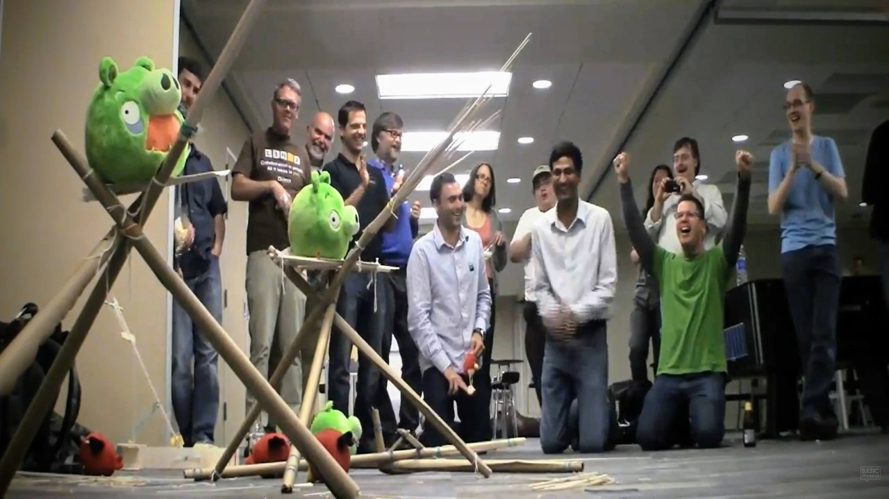
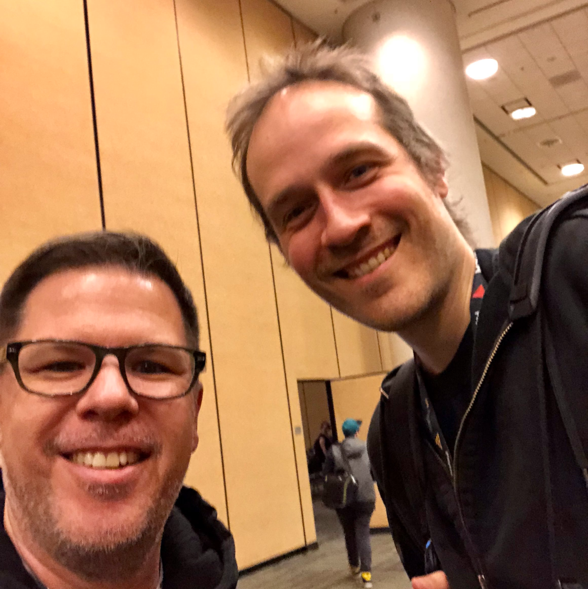

Beyond the Screen: How Games Forge Our Deepest Connections

The Question at the Table
What happens when the controllers go down and the last die is tucked away? The things that linger aren’t the win or the loss. It’s the people we played with. I grew up hunched around computers with friends in the 80s, swapping floppy disks, sharing games, and building relationships across 9600 baud modems and ill-managed Bulletin Board Systems. By the early 90s, LAN parties and multiplayer matches had taught me the thrill of connection, as we fragged each other over and over and laughed until it hurt. My first GDC in 1993 was another revelation, a chance to see how people came together around games in every shape and size.
In the late 90s, after about five years of web design work, I began building hand-coded web journals, hoping to capture attention and reach someone out there who might see themselves in my words. In the early 2000s, these sites evolved into blogging communities where success wasn’t measured in hits or likes but in the depth of conversations that unfolded in comment threads. Later, I moved into open-source projects where I connected with tens of thousands of users. A number of those people became collaborators, mentors, and friends. By 2008, I was toying with the idea of writing an essay about the open-source world, titled “The Not So Secret Garden: Debunking the Myth of Exclusivity.” During my brainstorming process, though, I realized that games had already staked their claim on that territory. Interaction, the thread that inherently runs through play, was shaping the way I approached the idea of community already.
Most of the time, we play for the challenge, the thrill, or the fun. And that’s partially true. But underneath it all, we are chasing connection. Those late-night tabletop RPG sessions with friends, board games with our families, and online co-op raids all leave the same mark. The connections, conversations, and shared experiences are what really stick. I’ve heard it called the digital hearth, or a warm place online where people gather and feel at home. I posit that the hearth exists anywhere we gather to play, whether it is a kitchen table or a crowded convention hall.
The Drive to Connect
The drive to connect isn’t something games invented. It is something we carry with us, older than any design mechanic or software tool. The games themselves are a lens for it. I have read plenty of studies reporting that the best games come from an understanding of human behavior over technology. I’ve seen it firsthand as well. An indie developer once told me that the games people return to most are the ones that make them feel like they’re a part of something bigger. The game is the vehicle. What matters is that people go along for the ride.
In hindsight, I’m glad I never wrote the 2008 essay. Although it did serve as a lens through which I was able to learn. It taught me to notice how communities form not because of rules or interfaces but because of small acts of care and attention. Whether on a forum, a wiki, a bug-reporting tool, or through a LAN, people were creating patterns of connection that felt almost invisible at first but were powerful enough to sustain entire networks. The essay never needed to exist to show me the principle that human connection is what gives these spaces life.
Where Communities Take Root
Communities take many shapes. Some are carefully cultivated by developers who know that forums and support channels can be just as important as the game itself. Open‑source advocate and company founder Jono Bacon recently posted a video about cultivating robust communities titled “Build a Movement, Not a Discord” (watch it on YouTube), and I genuinely echo his thinking. Connection, far more than the product, is the real bedrock of sustained engagement. Even technical platforms like GitHub show that collaborative technical spaces can be as meaningful as the end product. Guidelines, reputations, and rituals give structure, but the heart of it is knowing your contribution matters.
Then some communities grow autonomously within Discord servers, subreddits, and chat rooms. In fact, some of the richest networks begin this way. People gather to ask questions or offer help. In‑jokes and slang emerge. The rhythm of these spaces can feel more like family than fandom. Platforms like Discord or Slack can be the place where communities form, but they are not the whole story. What really matters is that people feel seen, valued, and connected beyond the chat window.
Physical gatherings deepen the experience. Local game nights, tournaments, and festivals might look different, but they operate on the same principle. When people who love games meet in person, something changes. I definitely felt it at IndieCade, when it was still an in-person event. Game designers and developers would show up with their games and their stories, knowing that the community came first. That openness creates space for connection, and sometimes those connections turn into long collaborations. Some indie games that reached bigger audiences began exactly in these moments.
Lessons from a Game Design Hero
I was fortunate enough to meet one of my game design heroes, Jason Rohrer, at the 2018 GDC. Jason is the creator of award-winning games and art pieces such as Passage, One-Hour, One Life, Inside a Star-Filled Sky, and The Castle Doctrine, one of my favorite community-oriented games.

The Castle Doctrine depended on its community to thrive, yet players could not interact directly except through the gameplay and mechanics. The game’s online forum, though, was vibrant and exciting, allowing players to brag about their ingenious house-protecting inventions or kvetch about losing a week’s worth of work. That tension taught me something important. Even a subtle or constrained community can shape a game’s culture. Small threads of interaction can sustain a thriving, engaged player base.
My Own Journey
My experience in the industry follows a similar arc. I was deeply invested in the people who responded to my blog posts. I felt obsessively eager to interact with the collaborators I met through open-source projects. I thrived on late-night IRC conversations with strangers in distant cities that turned into long-lasting friendships. Attending conferences and festivals reminded me again and again that it is the unstructured moments between sessions that leave the most lasting impact. My first GDC in 1993 and every one since has been a living timeline of gaming’s social landscape. I was happy to find myself in a community where the lines between developer, player, and advocate often blurred in the best way possible.
The Endgame of Connection
Looking back, the games that shaped me most weren’t always the big blockbusters. They were the games that tried to make room for other people. They were the ones that invited connection with others and left us with shared memories.
Connection isn’t just a nice-to-have in game design. It is the heart of it. A game does not need to be multiplayer to create community, but it does require developers who understand that the meta of community must be considered in every choice they make. Those who embrace this know they are not just creating products. They are creating ecosystems where people feel at home. Whether that community is a chat server, a game night, or a sprawling single-player adventure, the feeling is the same. We are not alone.
Good games are invitations. Once inside, the community is the experience. If we get it right and care enough to build spaces where people can show up, speak up, and stick around, what we are creating is not just a better game. It becomes a place to belong.
Page formatted by Written & Formatted. © Tim Samoff.